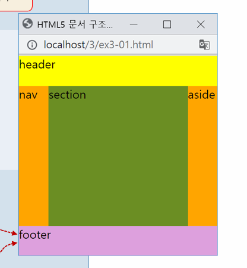

| 분류 | 태그 |
|---|---|
| 시맨틱 구조화 태그 | <header>, <nav>, <section>, <article>, <aside>, <footer> |
| 시맨틱 블록 태그 | <figure>, <details>, <summary> |
| 시맨틱 인라인 태그 | <mark>, <time>, <meter>, <progress> |
| 폼 태그 | <form> |
| 텍스트 입력 태그 | <input type="text|password">, <textarea> |
| 버튼 태그 | <input type="button|submit|reset|image">, <button type="button|submit|reset"> |
| 선택형 입력 태그 | <input type="checkbox|radio">, <select>, <datalist> |
| 시간 입력 태그 | <input type="month|week|date|time|date-local"> |
| 데이터 유형 태그 | <input type="number|range|color|email|url|tel|search"> |
| 폼 관련 기타 태그 | <label>, <fieldset> |

웹 폼은 사용자로부터 데이터를 입력받아 서버로 전달하는 핵심적인 인터페이스입니다.
폼 요소를 논리적으로 그룹화할 때는 <fieldset> 태그를 사용하며, 그 그룹의 제목은 <legend> 태그로 정의하여 사용자 편의성을 높입니다.